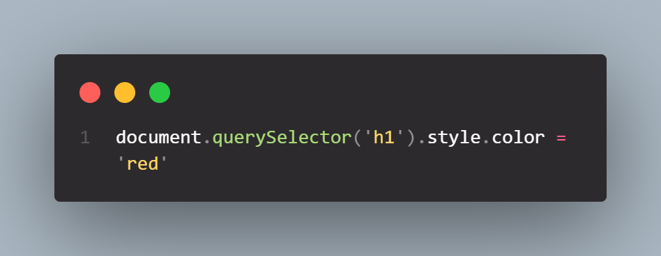
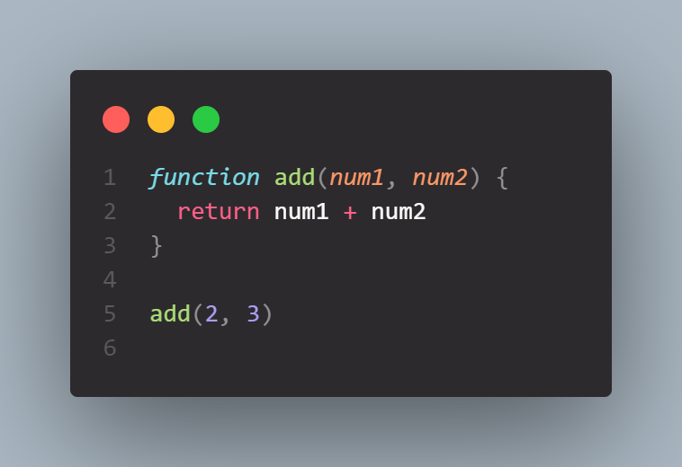

JS Fundamentals
Javascript basics for beginners
25 January 2024
Javascript, HTML, and CSS coexist with each other in a symbiotic relationship. One cannot survive without the other.
Let me explain this relationship in easy to understand terms with help of an example.
Lets imagine a really beautiful and well built car like this Shelby GT500CR
.jpg)
This represents a beautifully built web page.
Now, as we all know that a car is made of lots of different parts. HTML will represent the raw material to build the car like the steel body, chassis and glass used for the windows. The CSS will represent the look of the car i.e its color, shape, dimensions etc. The car with its shiny looks wont run if it doesnt have a engine or steering and controls in it. It will just be parked at a showroom. Thus, the word static is used to define a webpage with no javascript in it.
To move the car, you have to put engine in it and add steering and other controls to it. This is similar to what Javascript does. With help of javascript you can change the elements on a webpage however you want, making the page dynamic.
Control Flow
Control Flow is the order in which the program code statements are being executed. Control flow plays important part in the desired outcome of the code.
Taking example of the car above again, control flow would be direction towards which car is being driven, at what gear is it being driven. It can go forward or reverse. All this can be controlled from inside the car. Similarily javascript provides us with few tools to control the flow of the program. Some of these tools are Loops, conditional statements and functions.
Loops
As explained above loops are very important part of programming languages. Loops are used to control the flow of the code where you need a particular task to be done repetitively. For example, with the car above, when it is raining we need the wipers to run again and again in the same pattern until the rain stops. Imagine if we had to do it manually, it would be literally impossible. Loops help us in doing these kind of repetitive tasks. It can be better explained with the help of code example below.


Here you can see that we looped 5 times and with each iteration we increased the counter and displayed it in the console.
DOM
DOM is short for Document Object Model. It represents the structure of a webpage that can be used to manipulate the page. DOM thinks of webpage as a combination of nodes and objects. These nodes and objects can be accessed through javascript and modifid as needed.
If we look at image on the right we can see that DOM manipulation is being done in this code to change the background color of the page. DOM has various different ways to access the HTML page or document. We use the notation "document." to access all the objects of the document. Here we used the command "document.querySelector". We can also use "document.GetElementByID" or "document.GetElementsByClassName" to access the objects by their Id or Class Names. There are several other methods as well which we will not discuss in this article. If you are curious you can visit this mdn Page on DOM manipulation.


Here you can see we manipulated DOM and changed the color of "h1" element to red
Arrays and Objects
Arrays and Objects are two diferent ways of storing values in Javascript. Actually Arrays are also a sub-category of objects. The difference in both of them is that in Arrays, we can access values based on their index number while in Objects, we can access values on basis of their named index.
We use Arrays when we have collection of values that has something in common. We can put these values together in a single container.
For example we have collection of fruits. We can make a array called fruits and put all the values in a single array. We can access these values by calling their index number.
Array example
let fruits = [ 'apple', 'banana', 'oranges', 'peaches' ]
How to access the values in array
fruit[0] = apple
fruit[2] = orange
On the other hand, Objects are used mainly when we have a collection of different items, which are somehow related to each other. We can then access these stored values with help of their named keys.
In example below, we are making an object 'car' with name keys of 'type', 'model' and 'color'. We can use two different methods to access values in the object. A dot notation and bracket notation.
Object example
const car = {
type:"Ford",
model:"Shelby GT500CR",
color:"black"
};
How to access the values in array
car.type = Ford
car[type] = Ford
Functions
In programming, a function is like a mini-program within a larger program. It does a specific job and can be used over and over. Functions are helpful in many different ways.
- They break down big problems into smaller, more manageable tasks.
- Once you write a function, you can use it again without rewriting the same code.
- Functions make code easier to understand by grouping related tasks together.
- They hide the details of how something works, showing only what's necessary.
In example above we have a function called 'add', which does sum of any two numbers. After declaring the function we have to call the function to make it work. A function can be declared with a set of parameters or without any paramenters. In function above, it takes two numbers as its parameters and add them together. We can see we called the function with add(2,3)
In short, functions make coding more organized, reusable, and understandable. They're like building blocks that contribute to better, more efficient programs.